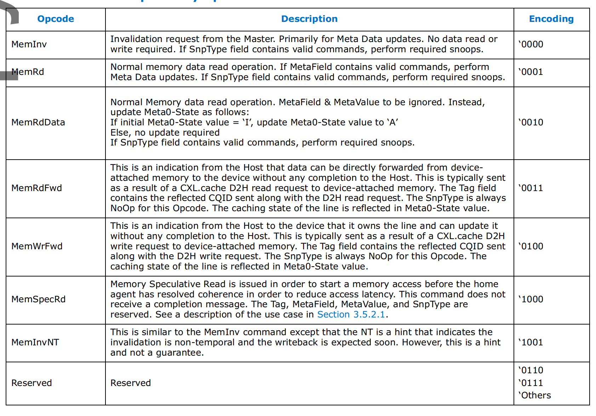

产生背景
作为协议主要发起方，intel在2019年首次提出了cxl协议并联合国内外一众芯片和硬件公司组成了cxl联盟。在cxl协议之前，pcie作为节点设备之间常用的连接协议。cxl的提出主要是希望填补一下pcie在异构计算和分离式数据中心方面的不足。cxl的优势可以总结如下：
-
提供高效的share mem pool的访问机制
-
cpu和第三方accelerators之间数据交互更加高效
-
cxl协议的低时延特性(ns级)让内存拉远成为可能。
与cxl对等的还有ccix和nvlink这两种高效互连协议，这里需要专门说一下nvlink。搞gpu的同学应该对它都不陌生，从时间点上来看nvlink在2016年就开始在nv的相关产当中开始使用了，今年nv又把它用在自家的arm cpu跟gpu之间的互连上。intel之所以提出自己的cxl协议，也主要是为了避免nv进一步蚕食自己的数据中心市场，要知道老黄野心远远不止gpu。不过intel在效率上也确实不如nv，否则也不至于到了SPR这一代才开始支持CXL。下面我们就来探索一下cxl协议和base在这些协议上的设备。
cxl 三种协议
cxl 协议base在pcie 5.0之上，其提出了三种协议分别如下：
-
cxl.io 其主要负责cxl设备的发现，设备初始化，bar和配置空间访问，中断以及dma、ATS。
-
cxl.cache 其重新定义了设备与host主存之间的交互方式。之所以说是重新定义，我们先来看一下在common pcie的场景下设备是如何跟host主存之间进行交互的，大体可以分为下面三个步骤：
- 设备驱动通过dma map相关的api 将host主存映射到设备能访问的io空间。
- host 通过写mmio告诉设备该段地址range和大小
- 设备触发dma操作将数据搬运到设备private mem(如网卡的SRAM)里面。 而在cxl cache 协议模式下，设备是可以cache host的主存的，这种访问方式的时延更加低。如何理解这个cache host主存呢？cxl cache 主要是基于MESI(Modified, Exclusive, Shared, Invalid) cache一致性协议，然后通过request and respose这种工作模型来实现设备跟host之间的数据交互。具体来说，cxl cache硬件分别在每个方向上(host2device and device2host)定义三个channel：request，response，data。具体如下

-
cxl.mem 该协议实现了host memory和device memory的统一编址，host cpu能够通过load and store指令直接访问device memory也称之为host managed device memory。hdm底层的存储介质可以是dram也可以pmem。在cxl mem协议之下， cpu 侧的coherency engine作为Master，然后device attached memory作为Subordinate(下属)。Master作为请求的发出方如数据read，write等；而Subordinate作为请求的响应方。由master 发往 subordinate的交互简称为M2S，相反方向称之为S2M。每种交互都有两种不同的消息类型，先来看一下M2S
-
request without data(Req)
-
request with data(RwD)
-
接着看一下S2M的两类消息 - Reponse without data(NDR)
- Repose with Data(RwD)
交互定义的不同Opcodes，具体如下图所示：

cxl三种设备类型
讲完cxl三种协议实现，我们再来看一下cxl支持的三种不同类型设备。为了让大家有一个整体的认知，我们先上一张整体的架构图
结合着上面的图我们来来看一下这三种类型设备的异同点：
- type 1 device
从上图可以看到type 1 device 只支持cxl.io和cxl.cache这两种协议，通常用于需要经常访问host主存的一些设备比如网卡和硬件加速器等。
- type 2 device
type 2 device 支持 cxl.cache和cxl.mem，一般都会带有 device attached memory如HBM 或者DDR。这类设备使用的场景是host和device之间需要大量的进行内存访问和数据交互比如gpu等。跟传统pcie设备的device attached memory 区别在于，cxl.mem协议下的 device attached memory跟host 主存是统一编址的，host cpu 访问 type 2 device attached memory跟访问host 主存没有区别。
结合上图的这张图我们来聊一下type 2 当中引入的Bias Based coherency model，在这种model下。HDM可以有两种状态，分别是 Host Bias和Device Bias。当hdm设置为 Host Bias state时，如果设备要访问 HDM则需要先把request发到Host，再由Host完成相关的操作；当hdm 设置为 device Bias state时设备访问HDM时不需要往host发相关的request，前提是需要device保证host侧没有cache的旧数据。需要注意的是，不管是哪种Bias state对host侧来说这些hdm跟host attached memory 都是统一地址的。为了实现Bias model，需要type 2 device实现以下能力
- 实现Bias table来追踪Bias(中文可以译为偏差)，粒度需要细化到page。
- 支持使用TA(translation agent)来进行Bias translation，从而能够比较方便的flush host侧的cache。
- 支持通过load and store指令去访问local的memory。
- type 3 device
该类型的设备只支持cxl.io 和cxl.mem，这种类型的设备一般作为host memory的扩展来使用，因此cache一致性主要是由cpu侧来保障。至于type 3设备跟host cpu进行交互相关机制会在后续的系列当中进行详细说明。另外，type3设备还支持Multi Logical Device(个人理解跟 pcie sriov 比较类似)，每个MLD可以再细出为16个独立的LD(logical device)，LD与LD之间通过LD-ID一个16bit的identifier来区分。
总结
上面介绍了cxl的协议和设备，cxl给后续的设备与host之间的低时延交互以及内存池化都带来了比较多的想象力。后续的文章，将会给大家讲一下cxl设备的发现和枚举流程。